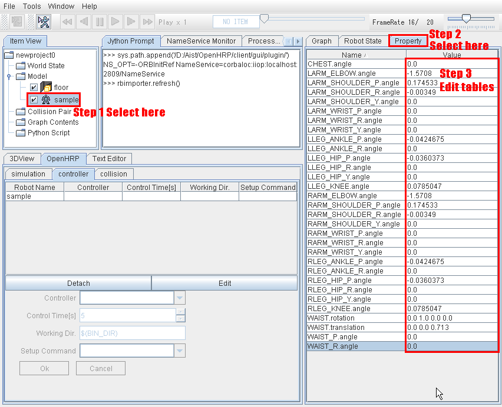
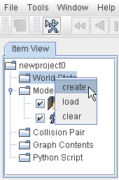
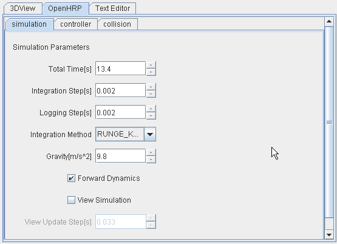
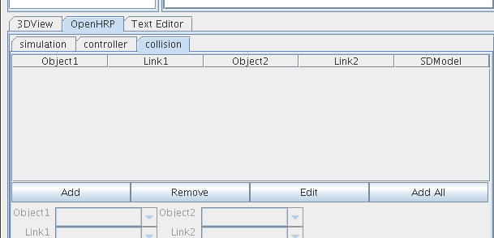
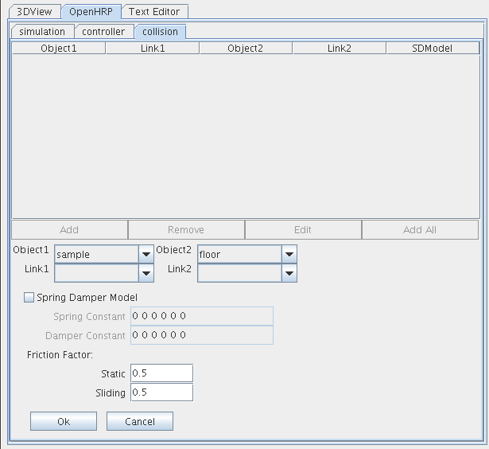
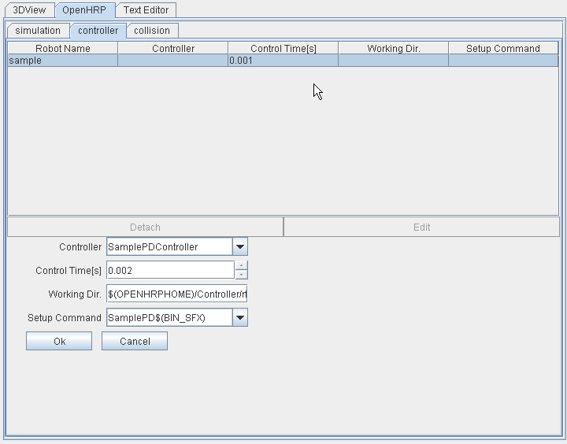
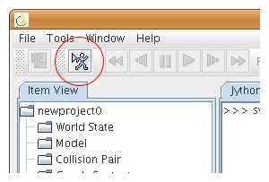

プロジェクト
プロジェクトはGrxUIを使用して作成します。まずGrxUIを起動してください。
モデル
ロボットの歩行シミュレーションを扱うため、ロボットと床をロードします。
Item ViewリストにあるModelを右クリックし、Loadを選んでください。
OpenHRP3/etc フォールダーにあるfloor.wrlとsample.wrlをロードします。
floorを右クリックし、change into environment modelを選んで、環境モデルとします。
次にロボットの初期姿勢をあたえます。モデルsampleのPropertyを図1のように設定します。
表１では入力値を明示します。

図1: Property 編集手順
表1: Sample robot property
| CHEST.angle | 0.0 |
| LARM_ELBOW.angle | -1.5708 |
| LARM_SHOULDER_P.angle | 0.174533 |
| LARM_SHOULDER_R.angle | -0.003490 |
| LARM_SHOULDER_Y.angle | 0.0 |
| LARM_WRIST_P.angle | 0.0 |
| LARM_WRIST_R.angle | 0.0 |
| LARM_WRIST_Y.angle | 0.0 |
| LLEG_ANKLE_P.angle | -0.0424675 |
| LLEG_ANKLE_R.angle | 0.0 |
| LLEG_HIP_P.angle | -0.0360373 |
| LLEG_HIP_R.angle | 0.0 |
| LLEG_HIP_Y.angle | 0.0 |
| LLEG_KNEE.angle | 0.0785047 |
| RARM_ELBOW.angle | -1.5708 |
| RARM_SHOULDER_P.angle | 0.174533 |
| RARM_SHOULDER_R.angle | -0.003490 |
| RARM_SHOULDER_Y.angle | 0.0 |
| RARM_WRIST_P.angle | 0.0 |
| RARM_WRIST_R.angle | 0.0 |
| RARM_WRIST_Y.angle | 0.0 |
| RLEG_ANKLE_P.angle | -0.0424675 |
| RLEG_ANKLE_R.angle | 0.0 |
| RLEG_HIP_P.angle | -0.0360373 |
| RLEG_HIP_R.angle | 0.0 |
| RLEG_HIP_Y.angle | 0.0 |
| RLEG_KNEE.angle | 0.0785047 |
| WAIST.rotation | 0.0 1.0 0.0 0.0 |
| WAIST.translation | 0.0 0.0 0.713 |
| WAIST_P.angle | 0.0 |
| WAIST_R.angle | 0.0 |
WorldState
ここでは、WorldStateを作成しパラメータを与えます。
Item ViewリストにあるWorldStateを右クリックし、createを選んでください。

図2: WorldState
OpenHRPタブのsimulationタブで各項目を以下のとおりに設定してください。
表2: Simulation Parameters
| Total Times[s] | 13.4 |
| Integration Step[s] | 0.0020 |
| Logging Step[s] | 0.0020 |
| Integration Method | RUNGE_KUTTA |
| Gravity[ms-2] | 9.8 |

図3: Simulation Parameters
Collision Pair
OpenHRPタブの中のcollisionタブを選択し、floor-sample間の干渉チェックが行われるように設定してください。

図4: collisionタブ
Addボタンをクリック、Object1はsampleを選択してOKボタンをクリックしてください。

図5: Collision Pair追加
コントローラ
ここではコントローラの設定を行います。
OpenHRP タブの controller タブに移動し、表３に示すようにコントローラ・パラメータを設定してください。
Controller の 選択項目として SamplePDController が現れない場合は手動で記入してください。
※ 表3 で示している値はあくまでも例であり、自分用のコントローラを作成し使用する場合は
適当にに変更してお使いください。
表3 : Controller Parameters
| Controller | SamplePDController |
| Control Time[s] | 0.002 |
| Working Dir. | $(OPENHRPHOME)/Controller/rtc/SamplePD |
| Setup Command | SamplePD$(BIN_SFX) |

図6 : Controllerタブ
シミュレーション
シミュレーションを実行してください。"start simulation"ボタンでシミュレーションを開始しします。

図7: シミュレーション開始
プロジェクトファイルの保存
生成したプロジェクトを保存するには、メニューから file → Save Project を選択してプロジェクトファイルを保存します。